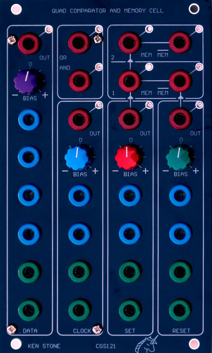

|
This module is the combination of a quad comparator "voting system" and memory cell (flip-flop). It can be built in many ways to suit the builder's needs. For example, if the memory cell functions are not required, they can be omitted. Alternatively, the panel presence of the comparators can be greatly reduced if the memory cell is the primary interest. The comparator "voting" circuits can be used as OR, AND or 2 of 3, 2 of 4, 3 of 4 etc. type gates, depending on construction. Both positive responding and negative responding inputs are available. Master AND and OR outputs monitor the four voting circuits. AND goes HIGH when the outputs of all four comparators are HIGH. OR goes HIGH when the output of at least one of the four comparators is HIGH. The outputs of the four comparators are used to drive the flip-flop memory cell, providing SET, RESET, CLOCK and DATA inputs. The purpose of the module is to allow the combination of various gate events and CVs to generate responses, rhythms, etc. When the SET comparator output is HIGH, it will set the Q output (K) of the first Memory cell HIGH. When the RESET comparator output is HIGH, it will set the Q(inv) output (L) of the first Memory cell HIGH. Note that when both the SET and RESET comparator outputs are HIGH, both the Q and Q(inv) outputs of the first memory cell will be HIGH. When the inputs change, the memory cell will take on the state of the last of the two inputs to fall LOW. The memory cell can also be programmed with a two-step procedure. The output state of the DATA comparator will be clocked into the first memory cell when the output of the CLOCK comparator goes from LOW to HIGH. At the same time, the previous state of the first memory cell will be loaded into the second memory cell, the result being available at outputs M and N. A little on how it works:
Construction
1/8W, 1/4W or small bodied 0.6W resistors may be used. 5% carbon resistors are sufficient, although metal film resistors can be used. Before you start assembly, check the board for etching faults. Look for any shorts between tracks, or open circuits due to over etching. Take this opportunity to sand the edges of the board if needed, removing any splinters or rough edges. When you are happy with the printed circuit board, construction can proceed as normal, starting with low profile components such as resistors and diodes first, followed by successively taller components. Take particular care with the orientation of the polarized components, such as ICs, electrolytics, diodes, and transistors. When inserting the ICs in their sockets, if used, take care not to accidentally bend any of the pins under the chip. Also, make sure the notch on the chip is aligned with the notch marked on the PCB overlay. The value of RLED is chosen via experimentation. Take an example of your chosen LED, and connected it via a 1k resistor to your supply voltage (+12V or +15V). For a more accurate test, add a diode in series. Look at the LED. If it dazzles you, you need to increase the value of the resistor. If it is too dark, reduce the resistor. Only old, low mcd LEDs will need a low value resistor. I prefer to use high mcd/super-bright/ultra-bright LEDs with resistors in the range of 10k (for red/amber/yellow) to 33k (for green/blue). Using high mcd/super-bright/ultra-bright LEDs reduces the switching noise placed by the LED on the power rails, reduces power consumption and reduces waste heat. The unit will run on either +/-12 volts or +/-15 volts. Different values for the RO resistors are recommended for use with the different voltages. For +/-12 volts, use 1k2. For +/-15 volts, use 1k6 or something close to that (1k65, 1k62, 1k5). The first time you power it up, I would suggest you do so with 22 ohm resistors in series with the positive and negative power rails. This should save the chips if you have made a blunder.
On the rear of the PCB are various surface mount pads. Two under the 4013 are for emergency use, if you find the second cell does not clock properly. In that case, the two pads connected with a short track need to be separated and a resistor (e.g. 10k) needs to be soldered there. The other location is for a capacitor (e.g. 100pF). Keep the relationship between them more or less the same, e.g. 1k : 1n. Increasing either value will improve the clocking at the cost of maximum speed. In all likelihood, this issue will only arrive if you have sub-standard chips. Other surface mount pads, marked 47k, are used by the balance pots, and only need be installed if you use them, and do not put the resistors directly on the rear of the pots themselves. The remaining surface mount pads are expansion points for adding more inputs to the voting circuits. If you are going to be adding a lot of extra inputs, it is probably easier just to mount the resistors directly on the panel jacks, and run a single wire back to the board. The wiring guides will show the details.
There are three of each input available. The inputs are grouped in pairs, the non inverted and inverted inputs for each function being next to each other. The inner pair of each input group (e.g., ST) have the option of adding 47k SMT resistors on the rear, for the use with a bias pot. The bias pot affects both the non inverted and inverted inputs, allowing you to raise the trigger point on one while lowering it on the other. This allows the reduction of the number of pots needed on the front panel, compared with the use of individual pots for each input type. The bias covers the range from around -5V to +15V.
Using the PAN121 panel
Parts list This is a guide only. Parts needed will vary with individual constructor's needs. If anyone is interested in buying these boards, please check the PCBs for Sale page to see if I have any in stock. Can't find the parts? See the parts FAQ to see if I've already answered the question. Also see the CGS Synth discussion group.
Article, art & design copyright 2013 by Ken Stone
| |||||||||||||||||||||||||||||||||||||||||||||||||||||||||||||||||||||||||||||||||||||||||||||||||||||||||||||||||||||||||||||||||||||||||||||||||||||||||||||||||||||||||||||||||||||||||||